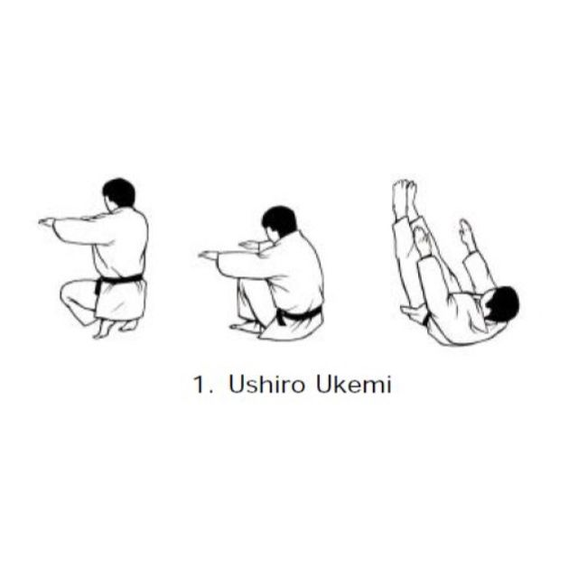

Ενότητα 2 / 8
Πρακτική και συναισθηματική διάσταση της ασφάλειας.
ΕΝΟΤΗΤΑ 2 ΑΠΟ 8
Με την ολοκλήρωση του μαθήματος, οι προπονητές/τριες θα μπορούν να:
Διδάσκουν και εφαρμόζουν συστηματικά τα βασικά ukemi και το tap ως θεμέλιο ασφάλειας.
Καθιερώνουν σαφείς κανόνες σωματικής ασφάλειας μεταξύ συναθλητών στο randori.
Αναγνωρίζουν και διαχειρίζονται τη συναισθηματική διάσταση της ασφάλειας στην τάξη.
Πυλώνας 1

Πριν μάθει κανείς να ρίχνει, μαθαίνει να πέφτει. Το ukemi δεν είναι απλώς μια τεχνική ανάμεσα σε άλλες· είναι η προϋπόθεση για να μπορεί ένα παιδί να συμμετέχει με ασφάλεια σε οτιδήποτε άλλο ακολουθήσει. Στο BJJ, το αντίστοιχο θεμέλιο είναι το tap: το σήμα που σταματά αμέσως κάθε τεχνική, χωρίς καμία εξαίρεση.
Πριν από την πρώτη επαφή στο tatami, κάθε νέο παιδί περνά από αυτή τη σύντομη συζήτηση: «Το tap είναι δύναμη, όχι αδυναμία. Αν νιώσεις πόνο, δυσφορία ή ότι κάτι δεν πάει καλά, χτυπάς, λες δυνατά "στοπ", και ο συμπαίκτης σου σταματά αμέσως. Πάντα. Χωρίς εξαιρέσεις, χωρίς ντροπή.» Η επανάληψη αυτής της φράσης σε κάθε νέο κύκλο μαθημάτων χτίζει την κουλτούρα της αποδοχής.
⏸ Στάσου και σκέψου
Έλεγχος κατανόησης
Ποια είναι η σωστή αντίδραση όταν ένας αθλητής κάνει tap;
Πυλώνας 2
Η ασφάλεια δεν σταματά στο δικό σου σώμα. Κάθε ρίψη, κάθε λαβή, κάθε κράτημα έχει μία συναθλήτρια στην άλλη άκρη και αυτή η συναθλήτρια είναι συνεργάτης στην εξέλιξή σου, όχι στόχος για να «κερδίσεις».
🥋 Σενάριο για συζήτηση
Ένα παιδί ρίχνει επανειλημμένα τον συναθλητή του χωρίς να κρατά το μανίκι, «για να φανεί» πιο δυνατό. Πώς παρεμβαίνεις;
Σταματάς αμέσως το ζευγάρι, εξηγείς ότι το κράτημα του μανικιού δεν είναι προαιρετική λεπτομέρεια αλλά μέρος της τεχνικής, και επαναλαμβάνεις τη ρίψη αργά, με έλεγχο, πριν επιτρέψεις να συνεχίσουν.
⏸ Στάσου και σκέψου
Έλεγχος κατανόησης
Στο randori με λιγότερο έμπειρο συναθλητή, η ένταση πρέπει να:
Πυλώνας 3
Η σωματική ασφάλεια είναι η μισή εικόνα. Ένα παιδί μπορεί να μην τραυματιστεί ποτέ σωματικά και παρ' όλα αυτά να νιώθει ανασφαλές, φοβισμένο, ή απομονωμένο στην τάξη. Αυτός ο πυλώνας καλύπτει πέντε συνήθεις προκλήσεις:
🥋 Σενάριο για συζήτηση
Ένα παιδί κάνει tap νωρίς σε κάθε randori και οι συμμαθητές του αρχίζουν να το πειράζουν. Τι κάνεις;
Παρεμβαίνεις άμεσα στο πείραγμα. Δεν είναι «αστείο», είναι υπονόμευση της ίδιας της κουλτούρας ασφάλειας που χτίζεις. Χρησιμοποίησε τη στιγμή για να υπενθυμίσεις σε όλη την τάξη ότι το γρήγορο tap είναι δείγμα ωριμότητας, όχι αδυναμίας.
⏸ Στάσου και σκέψου
Έλεγχος κατανόησης
Ένα παιδί αποφεύγει να κάνει tap λόγω πίεσης συνομηλίκων. Αυτό είναι αποτέλεσμα:
Πλαίσιο
Η ασφάλεια στο παιδικό judo/BJJ δεν είναι προσωπική επιλογή. Υπάρχει διεθνές πλαίσιο πίσω της, με επίσημους φορείς, πιστοποιήσεις και ακαδημαϊκή έρευνα. Το να γνωρίζεις αυτό το πλαίσιο σε βοηθάει σε καταστάσεις όπου χρειάζεται να εξηγήσεις μια απόφασή σου σε γονείς ή συναδέλφους. IJF.org, «The IJF is Ready for Safe Sport for All» (2022) · IJF Judo in Schools Toolkit · Owusu-Sekyere, Rhind & Hills (2022), Sport Management Review
Επιλογή Α
«Πώς κάνετε το δικό σας "tap talk"; Τι λέτε, πόσο συχνά το επαναλαμβάνετε;»
Επιλογή Β
«Θυμηθείτε μια φορά που ένα παιδί δυσκολεύτηκε συναισθηματικά μετά από μια ρίψη ή ένα submission. Πώς αντιδράσατε;»
Επιλογή Γ
«Πώς αντιμετωπίζετε το πείραγμα ή τη γελοιοποίηση ανάμεσα σε παιδιά μέσα στην τάξη;»
Σχηματισμός μικρών ομάδων (3–4 άτομα).
Κάθε ομάδα καταγράφει 2 παραδείγματα από τη δική της εμπειρία.
Σύντομη παρουσίαση & κοινή συζήτηση στην ολομέλεια.
Λέξεις-κλειδιά για να κρατήσετε τη συζήτηση εστιασμένη
Δεν υπάρχει ενιαίος αριθμός μαθημάτων. Εξαρτάται από την ηλικία και την ατομική πρόοδο κάθε παιδιού. Ο κανόνας είναι ποιοτικός, όχι χρονικός: ένα παιδί περνά σε randori μόνο όταν εκτελεί τα βασικά ukemi με σταθερότητα και χωρίς δισταγμό, όχι όταν περάσει ένας προκαθορισμένος αριθμός μαθημάτων.
Αυτό είναι σημάδι ότι το tap talk δεν έχει «περάσει» ακόμα, ή ότι υπάρχει κοινωνική πίεση να μη φανεί αδύναμο. Χρειάζεται ατομική συζήτηση εκτός τάξης, επανάληψη του μηνύματος, και ίσως προσωρινή μείωση της έντασης στα ζευγάρια του συγκεκριμένου παιδιού μέχρι να χτιστεί η συνήθεια.
Ιδανικά, με βάση μέγεθος και εμπειρία, όχι μόνο ηλικία. Όταν η διαφορά είναι αναπόφευκτη (μικρές ομάδες), ο πιο έμπειρος/μεγαλύτερος αναλαμβάνει ρητά τον ρόλο του «να προσέχει». Αυτό διδάσκεται και επιβραβεύεται, δεν που θεωρείται δεδομένο.
Άφησέ την εδώ ανώνυμα. Θα τις διαβάσω όλες πριν το επόμενο μάθημα και θα ξεκινήσουμε με τις απαντήσεις.